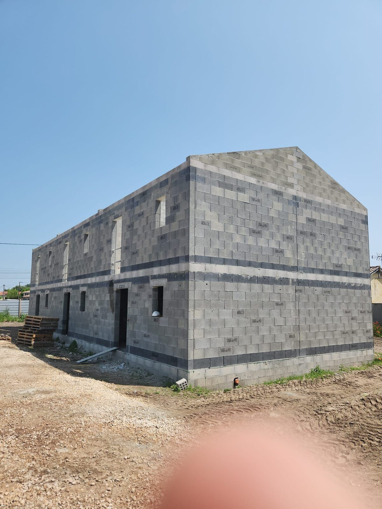
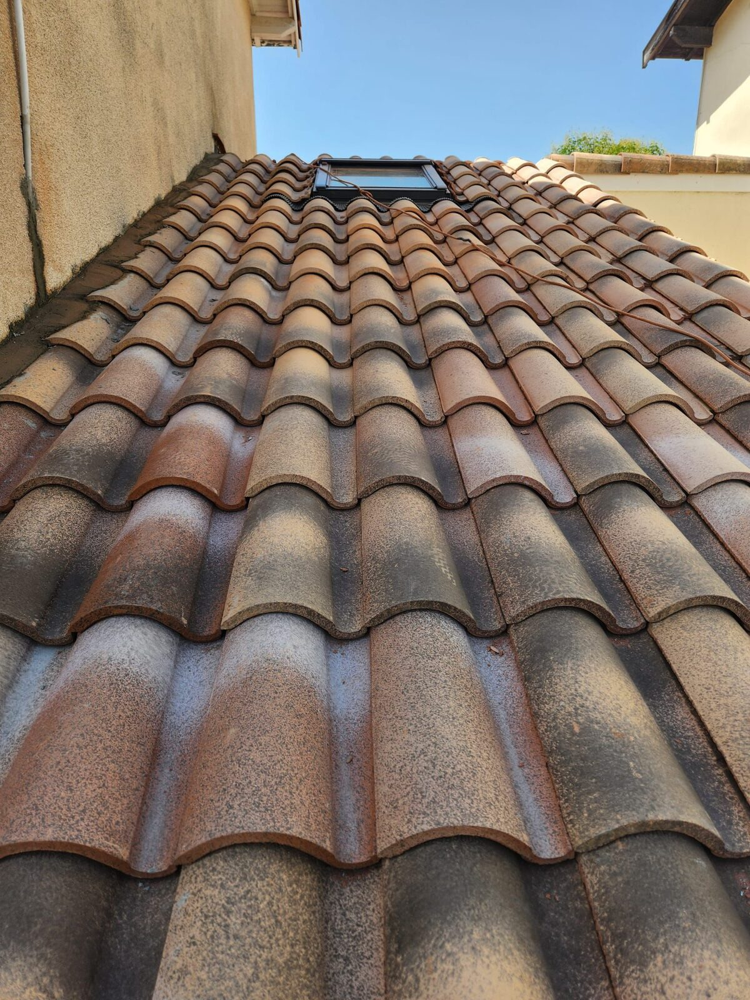
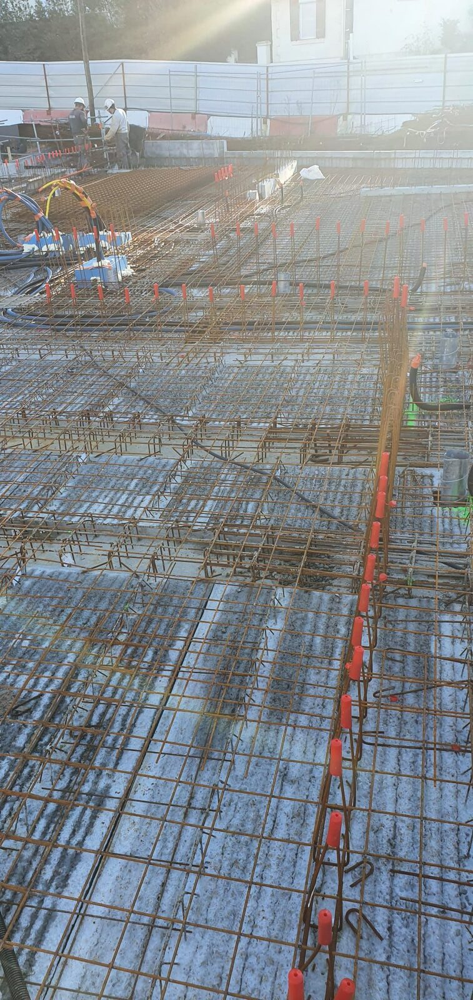
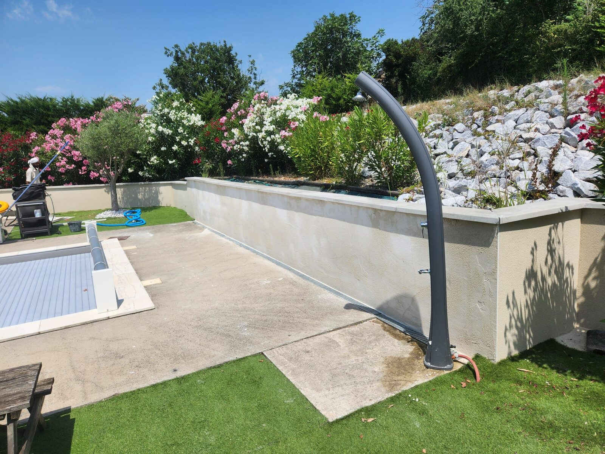
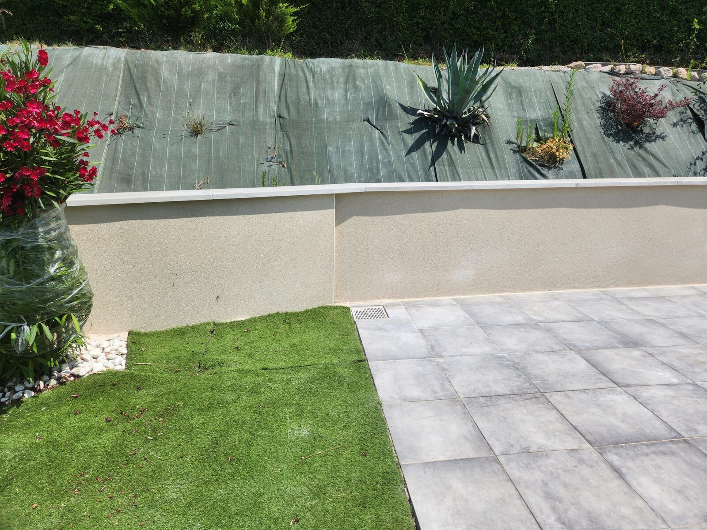
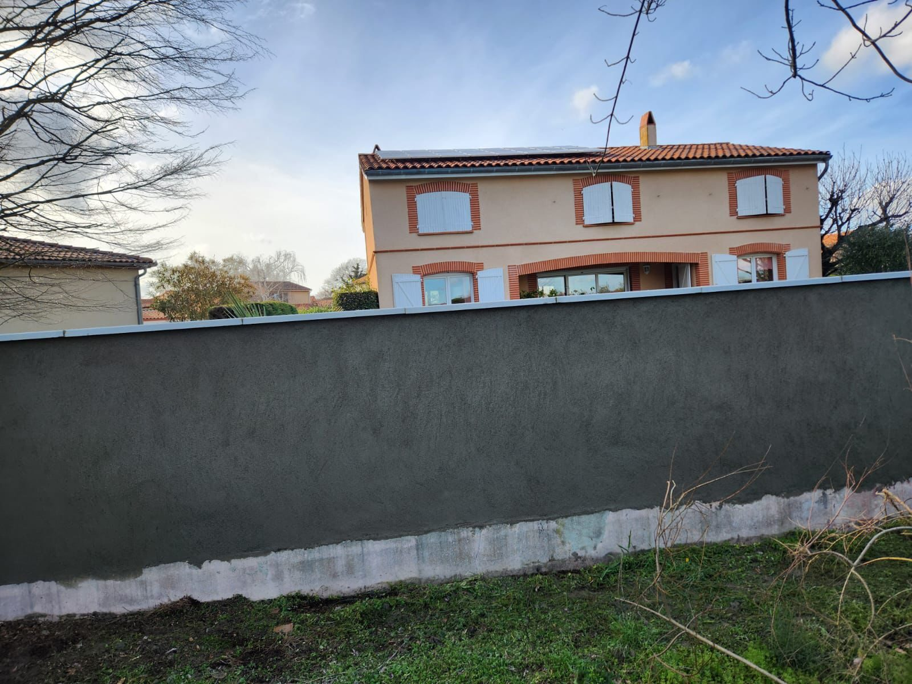
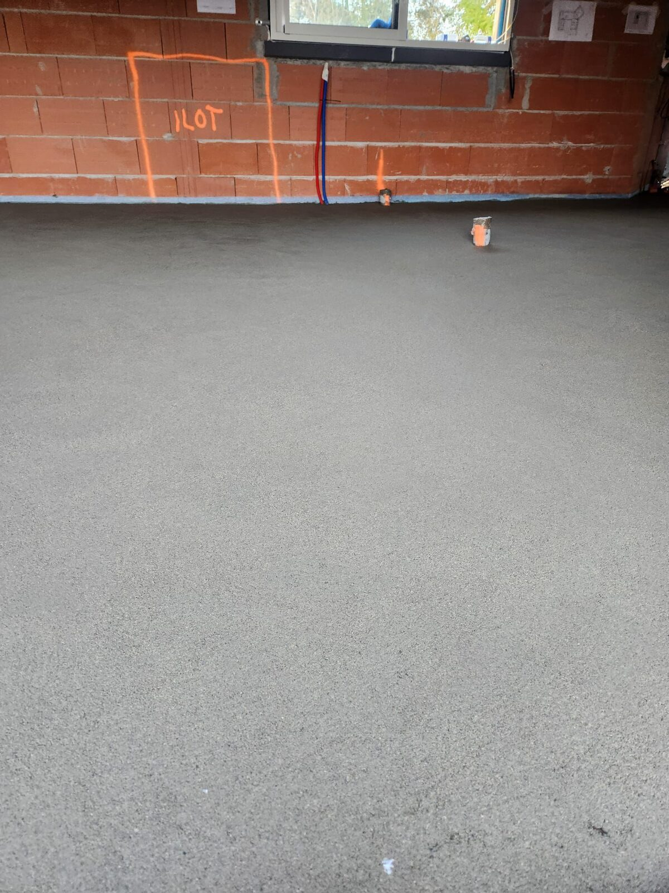
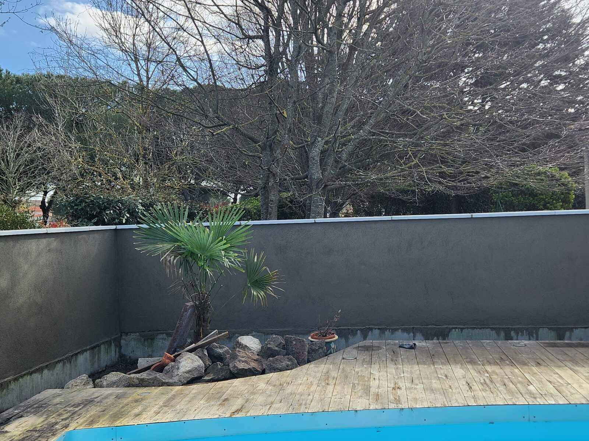

Extension R+1 · 38 m²
Création d'une extension maçonnée à l'étage, raccordement à la charpente existante, couverture tuiles.
Une sélection de nos réalisations récentes dans le nord toulousain. Cliquez pour découvrir le détail de chaque projet.

Création d'une extension maçonnée à l'étage, raccordement à la charpente existante, couverture tuiles.

Dépose tuiles anciennes, traitement charpente, pose nouvelle couverture en tuiles canal et zinguerie.

Réhabilitation complète d'une maison de ville : structure, isolation, cloisons, finitions.

Terrassement, coffrage, ferraillage et coulage d'une dalle béton pour pool-house et terrasse.

Création d'une grande ouverture entre salon et cuisine, pose de poutrelle IPN sur consoles.

Création d'une plage de piscine béton, pose d'une douche solaire et muret de soutènement enduit.

Dépose tuiles, pose d'un écran sous-toiture Terreal, repose liteaux et nouvelle couverture étanche.

Construction d'un muret de clôture en parpaings avec finition enduit gratté + piliers maçonnés.

Surélévation complète d'un pavillon : renforcement structure, étage neuf, charpente, couverture.

Élévation et enduit gratté d'un mur de clôture sur fondation béton, finition propre côté rue.

Coulage d'une chape fluide auto-nivelante sur plancher chauffant — surface plane, prête carrelage.

Construction d'un muret enduit gris autour d'une piscine, terrasse bois et habillage pierre.
Visite gratuite, devis sous 48h, démarrage planifié avec vous.